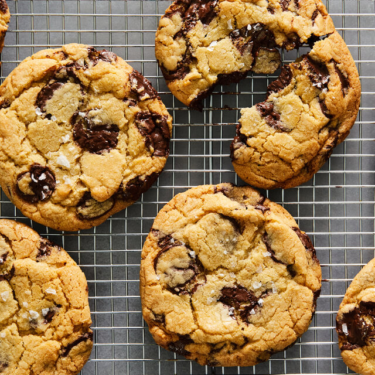

Choc Chip Cookies

Description
Indulge in the timeless delight of warm, gooey chocolate
chip cookies: crisp edges giving way to soft,
chocolate-studded centres. Each bite evokes cherished
memories and cosy moments shared with loved ones.
Whether enjoyed with a glass of milk or savoured solo,
these treats promise pure indulgence and a nostalgic
bliss that lingers long after the last crumb is gone.
Ingredients
- 8 oz browned butter
- 9.75 oz light brown sugar
- 4.5 oz granulated white sugar
- 2 large eggs
- 11.5 oz all purpose flour
- 1 tbsp kosher salt
- 1 tbsp hazelnut coffee grounds
- 1 tsp vanilla extract
- 1/2 tsp baking powder
- 1/2 tsp baking soda
- 16 oz inclusions
Steps
-
Combine the browned butter and sugars in the bowl
of a stand mixer. Begin creaming the butter and sugar,
using a paddle attachment, at medium-high speed.
Continue mixing until the butter becomes soft, aerated,
and fully combined with the sugars, about 1-3 minutes.
-
Scrape down the sides of the bowl to make sure the
mixture is homogeneous.
-
Start adding the eggs, one at a time, and mixing
thoroughly in between additions. Make sure to scrape
down the bowl in between additions as well. This will
ensure the entire mixture is well combined.
-
In a separate bowl, combine the flour, salt, coffee
grounds, baking soda, and baking powder. Whisk to
evenly distribute the ingredients.
-
Add the dry ingredients all at once to the mixing bowl,
then mix at low speed until the batter is just combined.
Overmixing the dough at this stage can result in
unwanted gluten development.
-
Combine the dough with the inclusions/toppings of your
choice. Once again, avoid overmixing the dough.
-
Using an ice cream scoop, scoop the dough into mounds.
Place them evenly on a large, rimmed baking sheet
lined with parchment paper.
-
Refrigerate the dough overnight or up to 3 days.
-
Bake the cookies at 375°F for 18-20 minutes, rotating
the pan halfway through.
-
Transfer the still hot cookie to a cooling rack.
-
Enjoy warm or at room temperature.